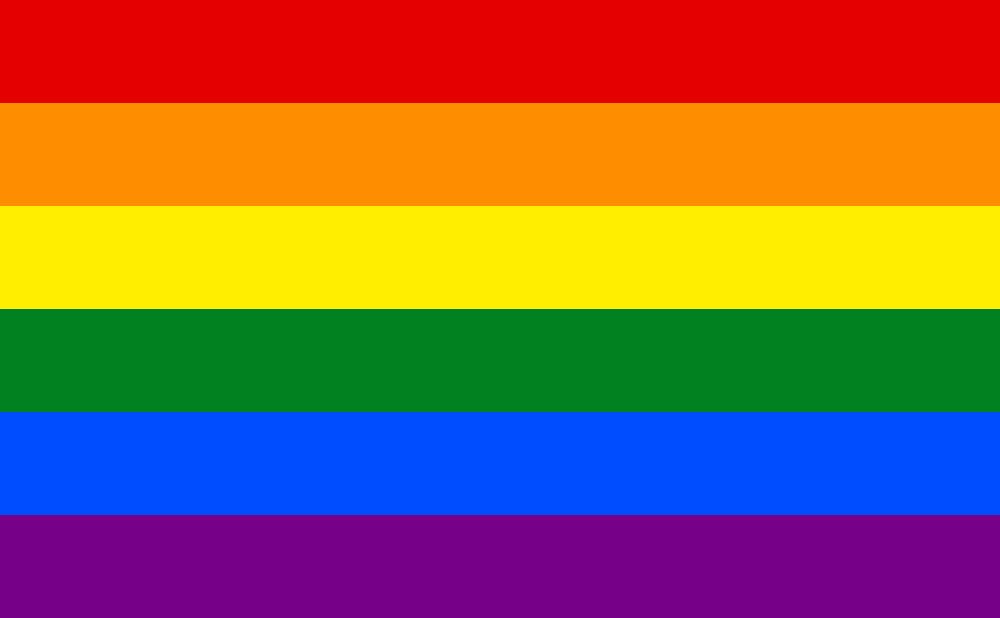

Un espacio inclusivo para todos/as
La comunidad LGTBI+ abarca una diversidad de identidades de género y orientaciones sexuales, promoviendo la inclusión y el respeto. Surgiendo de las siglas Lesbianas, Gays, Bisexuales, Trans e Intersexuales, representa un colectivo que lucha por la igualdad de derechos y la aceptación social. Esta comunidad desafía estereotipos y trabaja hacia la erradicación de la discriminación. Celebrando la autenticidad individual, el LGTBI+ impulsa cambios culturales, políticos y legislativos para construir un mundo donde todas las personas puedan vivir libremente, sin miedo al juicio. La visibilidad y el apoyo continuo son fundamentales para crear sociedades más inclusivas y respetuosas.
Explora los siguientes recursos para obtener más información y apoyo:
La historia de la comunidad LGTBI+ es una narrativa de resistencia, perseverancia y logros significativos en la lucha por los derechos civiles y la aceptación social. Desde los disturbios de Stonewall en 1969, considerados un punto de inflexión, hasta la actualidad, la comunidad ha enfrentado desafíos para alcanzar la igualdad. Durante décadas, las personas LGTBI+ han combatido la discriminación y la invisibilidad, luchando por el reconocimiento legal y la eliminación de barreras sociales.
En los años 70 y 80, el activismo LGTBI+ se intensificó, marcado por el surgimiento de organizaciones y la celebración de las primeras marchas del orgullo. La epidemia del VIH/SIDA en la década de 1980 exacerbó la discriminación y llevó a un activismo más urgente en la búsqueda de tratamiento, prevención y concienciación.
La década de 1990 vio avances legales con la despenalización de la homosexualidad en varios países, pero también la resistencia persistente. La lucha por el matrimonio igualitario se convirtió en un tema central en la primera mitad del siglo XXI, y muchos lugares han reconocido finalmente este derecho fundamental.
La aceptación social ha evolucionado, pero la violencia y la discriminación persisten en muchas partes del mundo. La identidad de género y la diversidad sexual continúan desafiando normas culturales y religiosas, pero la comunidad LGTBI+ ha demostrado una resiliencia inquebrantable.
A medida que la sociedad avanza, los logros se celebran, pero la lucha persiste. La visibilidad, la educación y el activismo son herramientas esenciales para cambiar percepciones y construir un mundo más inclusivo. La historia de la comunidad LGTBI+ es una poderosa narrativa de valentía colectiva y un recordatorio de la importancia de abogar por la igualdad y la diversidad en todas las formas.
Estamos aquí para escucharte. Si tienes preguntas, comentarios o simplemente quieres conectarte, no dudes en ponerte en contacto con nosotros:
Correo Electrónico: info@tupaginalgtbi.com